Bugs melden en volgen
Gebruik de Bugs tab om meldingen aan te maken, status te volgen, comments te plaatsen en upvotes te geven op problemen die aandacht nodig hebben.
Game guide voor spelers die alles willen snappen
Gebruik deze wiki als korte handleiding voor de tabs in BugBaas: waar je iets vindt, wat je daar kunt doen en welke regels achter rewards, battles en upgrades zitten.
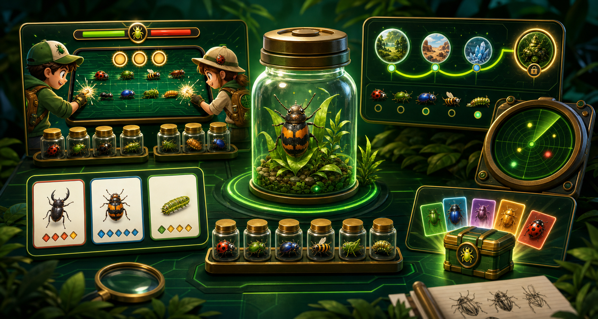

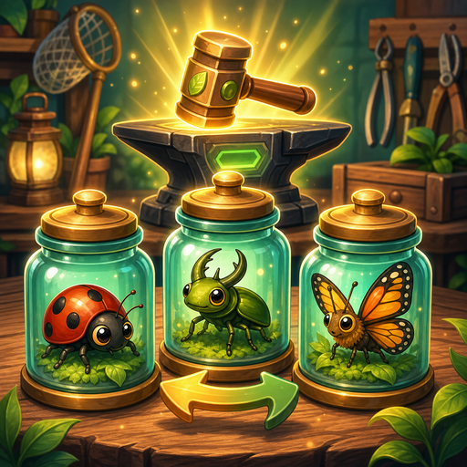

Kies eerst het onderdeel waar je in de app bent. Elke pagina legt kort uit wat je daar doet en welke regels belangrijk zijn.
Bug melden, status volgen en zien hoe acties rewards kunnen geven.
Dagelijkse signals, bewegen, Bug Lamp en solo-powerups.
Speel dezelfde seed tegen een collega en vergelijk score eerlijk.
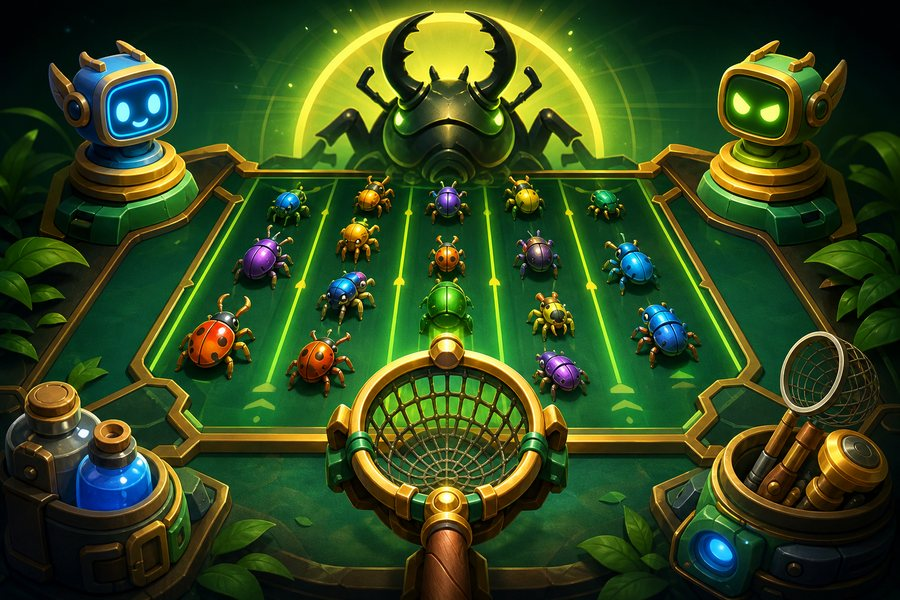
Oefen waves, versla bosses en claim dagelijkse boss rewards.
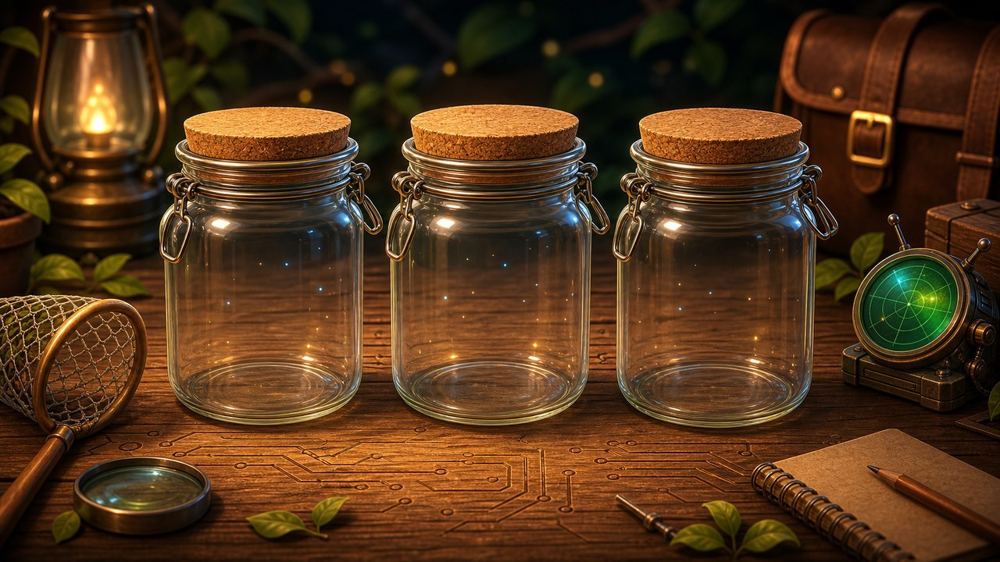
Kies drie actieve bugs die automatisch meehelpen in battles.
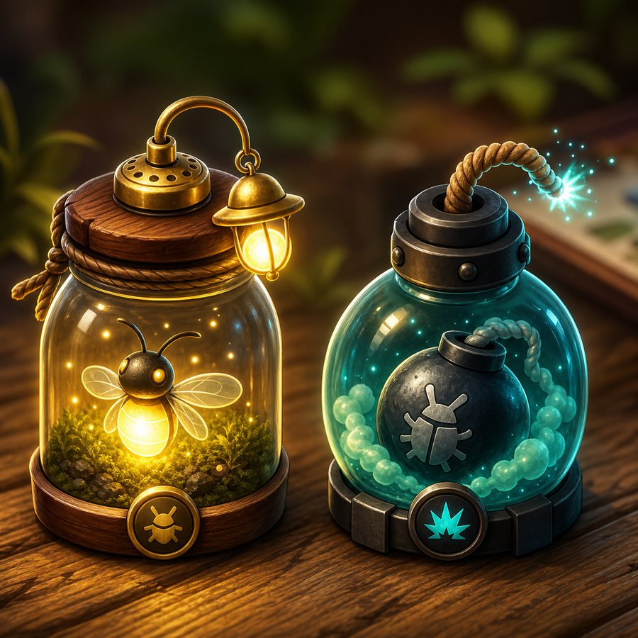
Wanneer je hoge targets pakt, powerups bewaart of beter doorspeelt.
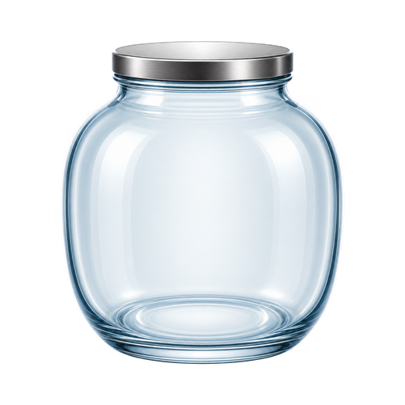
Bekijk unlocks, duplicates, rarity en welke bugs helperwaarde hebben.

Zie per actie hoe groot de kans is op een BugDex reward.
Gebruik duplicates voor trades en combineer bugs naar hogere rarity.

Bekijk XP-bronnen, weekly missions en de starter boost.
Deze pagina kan nog sterker worden als hij meer als naslagwerk en minder als losse uitlegpagina werkt.
BugBaas draait om twee dingen tegelijk: echte bugs beter opvolgen en spelprogressie verdienen door nuttige acties. Begin hier als je wilt weten welke tab waarvoor is.
Gebruik de Bugs tab om meldingen aan te maken, status te volgen, comments te plaatsen en upvotes te geven op problemen die aandacht nodig hebben.
Gebruik Arena voor duels en Solo Campaign. Je verdient XP, boss rewards en soms BugDex unlocks zonder dat spamacties de beste route worden.
Gebruik BugDex en Workshop om unlocks te bekijken, duplicates te ruilen en upgrades te maken. Actieve helperbugs blijven beschermd.
| Als je wilt... | Ga naar | Wat je daar doet |
|---|---|---|
| Een probleem vastleggen | Bugs tab | Nieuwe bug melden, prioriteit inschatten en updates plaatsen. |
| Snel dagelijkse progressie halen | Home tab | Daily login claimen, radar gebruiken en movement doelen volgen. |
| Je score verbeteren | Arena tab | Duels spelen, campaign oefenen en je Bug Squad testen. |
| Je collectie beheren | BugDex tab | Unlocks bekijken, helpers kiezen, ruilen en upgraden. |
| Je weekdoelen checken | Rank tab | XP, weekly missions en beloningen volgen. |
De BugDex tab is je collectiepagina. Hier zie je welke bugs je hebt, welke rarity ze hebben, welke duplicates je bezit en welke bugs geschikt zijn als helper of upgrade-materiaal.
| Rarity | Taps in Duel | Score | Hitbox | Opmerking |
|---|---|---|---|---|
| Gewoon | 2 | 1 | 1.00x | Snel pakken, lage waarde. |
| Zeldzaam | 3 | 2 | 1.05x | Vaak betere keuze dan meerdere gewone bugs. |
| Episch | 5 | 4 | 1.10x | Goede score, maar kost tijd. |
| Legendarisch | 7 | 6 | 1.14x | Sterk target als je helpers/timing goed zijn. |
| Mythisch | 9 | 9 | 1.18x | Hoogste waarde en unieke helper-specials. |
Mythische bugs zijn bedoeld als einddoel. Je krijgt ze niet uit normale random rewards; upgrade 10 verschillende Legendarische bugs naar Mythisch.
Niet elke actie geeft direct een bug. Eerst rolt de app of er een BugDex drop komt; daarna wordt de rarity gekozen. Boosts helpen een beetje, maar de caps houden rare en epic drops schaars.
| Bron | Drop kans | Gewoon | Zeldzaam | Episch | Legendarisch | Mythisch |
|---|---|---|---|---|---|---|
| Daily login | 35% | 100% | 0% | 0% | 0% | 0% |
| Bug melden | 58% | 70% | 24% | 4.8% | 1.2% | 0% |
| Comment | 24% | 73% | 23.4% | 3.5% | 0.1% | 0% |
| Status update | 22% | 71% | 24% | 4.5% | 0.5% | 0% |
| Bug gefixt | 45% | 68% | 24% | 4.8% | 3.2% | 0% |
| Upvote gegeven | 18% | 75.2% | 24.5% | 0.3% | 0% | 0% |
| Profiel bekijken | 8% | 88% | 12% | 0% | 0% | 0% |
| Foreground bug smash | 35% | 70% | 24.4% | 4.9% | 0.7% | 0% |
| Weekly all-3 bonus | 100% | 72% | 24% | 3.5% | 0.5% | 0% |
| Duel win reward | 100% | 71% | 24% | 4.5% | 0.5% | 0% |
| Solo boss 2 | 100% | 100% | 0% | 0% | 0% | 0% |
| Solo boss 4 | 100% | 75% | 24% | 1% | 0% | 0% |
| Upgrade | 100% | 0% | route | route | route | route |
Weekly all-3 bonus betekent: je claimt de extra weekbonus pas nadat alle 3 weekly missions van die week afgerond zijn. De BugDex roll is altijd 100%, maar rare blijft onder 25% en epic onder 5%.
Duel win rewards geven hun BugDex unlock niet direct in een popup: de bug spawnt eerst als foreground catch. Pas na tappen verschijnt de unlock. Rarity boosts mogen de cap niet breken: Zeldzaam blijft maximaal 24.5% en Episch maximaal 4.9% op random routes.
In de Arena tab daag je iemand uit voor een korte score-run. Beide spelers krijgen dezelfde bugvolgorde, dus het verschil zit in target-keuze, timing en je actieve Bug Squad.
Open de Arena tab en kies Duel. De uitdager speelt direct; de tegenstander kan later dezelfde seed spelen.
Je hebt 30 seconden en 56 targets. Hogere rarity geeft meer punten, maar vraagt meer taps en betere timing.
Win geeft 10 XP, verlies 5 XP. Een dagelijkse duel-reward telt maar 1x per tegenstander en BugDex wins verschijnen eerst als foreground catch.
| Mechanic | Wat gebeurt er | Waarom belangrijk |
|---|---|---|
| Combo bonus | Elke reeks catches kan extra punten geven, afhankelijk van squad. | Snel en netjes tappen wordt beloond. |
| Support bonus | Support helpers geven eindbonus op basis van score. | Maakt consistent spelen sterker. |
| Movement bonus | Movement helpers kunnen tot 3 eindpunten geven als je genoeg scoort. | Nuttig voor net-wel/net-niet duels. |
| Retry onder 30 | Lage of bugged eigen score kan opnieuw zolang de ander nog niet speelde. | Voorkomt verloren duels door een slechte submit. |
| Win BugDex reward | De reward wordt eerst als foreground bug klaargezet. | Je ziet altijd wat je vangt en krijgt geen stille unlock. |
Solo Campaign staat in de Arena tab en is bedoeld om zonder tegenstander te oefenen. Je speelt waves tegen BugBot, bouwt routine op en claimt dagelijkse boss rewards.
| Level | Wave 1 | Wave 2 | Wave 3 | Boss |
|---|---|---|---|---|
| 1 | 54 | 64 | 74 | 84 |
| 2 | 66 | 78 | 90 | 104 |
| 3 | 80 | 94 | 108 | 126 |
| 4 | 94 | 108 | 124 | 144 |
| 5 | 150 | 164 | 180 | 198 |
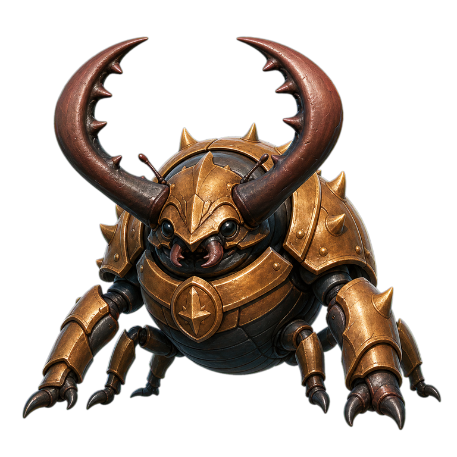
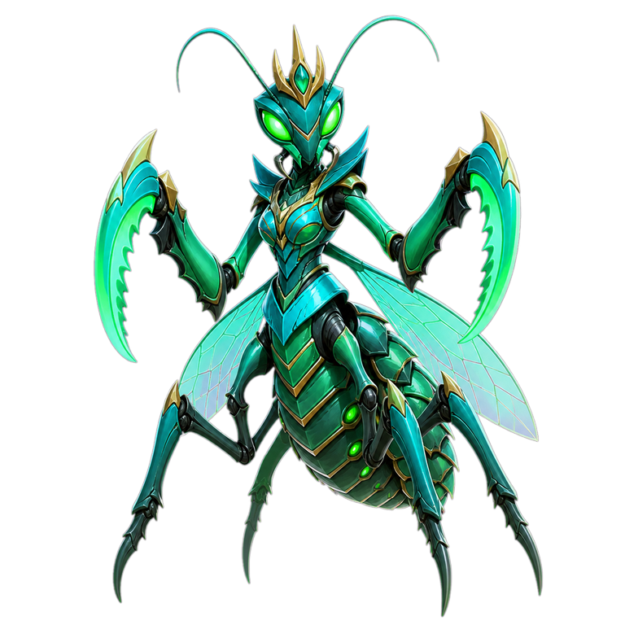


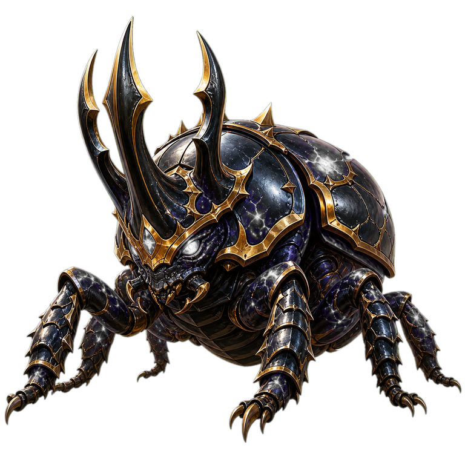
In de BugDex tab kies je maximaal 3 actieve helperbugs. In Duel en Campaign verschijnen ze als towers met cooldownbalk en geven ze automatische hits, slow, shield of andere control.
 Zap
Zap Sticky
Sticky AOE
AOE Shield
Shield Burst
Burst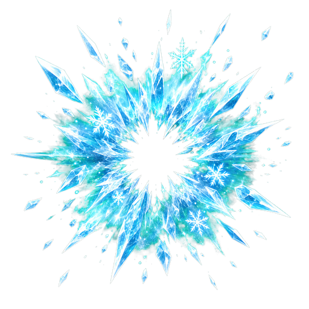
Freeze| Helper type | Effect | Typisch sterk tegen |
|---|---|---|
| Zap | Snelle hits op een belangrijke of zeldzame target. | Rare, Epic en Legendary targets. |
| Sticky | Plakt/vertraagt een target kort en doet extra hits als hij veel taps nodig heeft. | Zware targets die bijna ontsnappen. |
| AOE | Raakt doelwit plus nearby bugs; hogere rarity kan meer splash targets raken. | Groepjes gewone/zeldzame bugs. |
| Shield | Helpt op late targets en geeft guard/slow als ze ver op het scherm zijn. | Targets die bijna weg zijn. |
| Burst | Betrouwbare directe hit; tier-voordeel kan extra helpen. | Algemene cleanup. |
| Helper rarity | Base hits | Cooldown | Control bonus |
|---|---|---|---|
| Gewoon | 1 | 9.4s | 0ms |
| Zeldzaam | 2 | 7.9s | 220ms |
| Episch | 3 | 6.5s | 420ms |
| Legendarisch | 4 | 5.2s | 620ms |
| Mythisch | 5 | 4.3s | 820ms |
Mythische bugs zijn geen simpele extra damage. Elke mythic heeft een eigen rol: control, chain hits, finish damage of emergency defense. De kaarten hieronder laten per special zien wat je krijgt, wanneer je hem het best merkt en waarom hij niet te sterk wordt.

Royal Freeze
Bevriest het gekozen target en nabije bugs kort. Beste gebruik: drukke boss waves waarin je even controle nodig hebt.
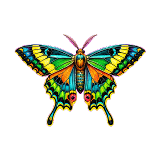
Prism Chain
Ketst lichte hits door naar bugs dichtbij. Beste gebruik: groepjes Zeldzaam/Episch waar losse taps net te traag zijn.

Pattern Break
Doet bonus damage op Episch+ targets. Beste gebruik: dure targets die anders te veel taps kosten voor hun score.
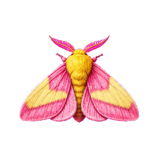
Candy Slow
Vertraagt een klein groepje bugs. Beste gebruik: targets die bijna uit beeld lopen terwijl je combo wilt vasthouden.

Longneck Scout
Scant naar hoge-rarity targets en geeft daar extra hits op. Beste gebruik: Legendarisch/Mythisch targets vroeg kiezen.
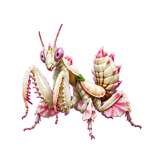
Bloom Blade
Finisht sterke of bijna kapotte bugs met extra slash damage. Beste gebruik: geen taps verspillen op laatste hit.

Lantern Signal
Markeert gevaarlijke targets en chain-hit extra bugs. Beste gebruik: snel bepalen welke bug nu de meeste waarde heeft.
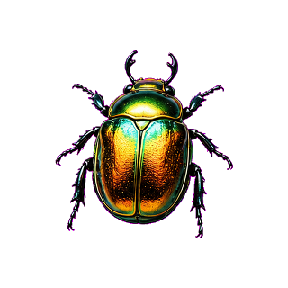
Mirror Guard
Vangt late ontsnappers op met shield damage en korte freeze. Beste gebruik: score redden aan het einde van een wave.
| Special | Rol | Waar sterk | Bewuste beperking |
|---|---|---|---|
| Royal Freeze | Control | Drukke boss waves | Koopt tijd, geen grote damage. |
| Prism Chain | AOE/chain | Clusters met meerdere targets | Zwakt af bij losse bugs. |
| Pattern Break | Anti-rarity | Episch+ targets | Weinig waarde op gewone bugs. |
| Candy Slow | Slow | Snelle targets vlak voor ontsnappen | Vertraagt, maar killt niet vanzelf. |
| Longneck Scout | Target focus | Zware targets tussen lage spawns | Afhankelijk van goede target-keuze. |
| Bloom Blade | Finisher | Bijna-dode sterke bugs | Heeft eerst damage nodig. |
| Lantern Signal | Mark/priority | Drukke duels met veel keuzes | Kleine hulp, geen auto-clear. |
| Mirror Guard | Emergency defense | Laatste seconden | Redt alleen beperkte missers. |
De Home tab bundelt dagelijkse progressie: login claim, movement doelen, radar-widget en tijdelijke boosts. Het is extra voortgang, geen vervanging voor bugs melden of battles spelen.
Geeft maximaal 3 signals per dag. Een signal kan XP en een BugDex roll geven; verwacht vooral gewone en zeldzame bugs.
Elke 5e daily login geeft een lamp. Na activeren werkt hij 24 uur: movement doelen halveren en rarity krijgt een kleine boost.
Boss clears kunnen Lamp Focus of Bug Bomb geven. Activeer ze bewust voor lastige campaign waves of boss attempts.
De Rank tab laat voortgang, XP en weekly missions zien. XP is bewust laag op spamgevoelige acties en hoger op doelen die echt terugkerende activiteit vragen.
| Actie | XP |
|---|---|
| Daily login claim | 5 |
| Duel winnen | 10 |
| Duel verliezen | 5 |
| Movement radar bug | 3 |
| Weekly mission XP | 20-25 |
| Weekly all-3 bonus | 10 + BugDex |
| Foreground catch Gewoon/Zeldzaam/Episch/Legendarisch/Mythisch | 1 / 3 / 6 / 10 / 15 |
Nieuwe of lage-XP spelers onder 20 XP krijgen 3 dagen lang 2x positieve XP en een extra onafhankelijke BugDex roll. De extra roll geeft niet twee keer dezelfde BugDex unlock in dezelfde catch-flow.
Elke week krijg je drie doelen, waaronder movement. Rewards zijn vooraf zichtbaar, zodat je weet of je speelt voor XP, een gewone BugDex roll of een betere zeldzame roll.
De Workshop staat in de BugDex tab. Hier krijgen duplicates waarde: je kunt ze ruilen met anderen of combineren naar een hogere rarity.
Selecteer wat jij aanbiedt en wat je terug wilt. Open trades tonen duidelijk welke kant van de ruil van wie is.
Combineer bugs naar hogere rarity. Mythisch is alleen via upgrade bereikbaar en vraagt 10 verschillende Legendarische bugs.
Een bug die in je actieve squad zit wordt beschermd. Heb je een extra copy, dan blijft die wel bruikbaar voor trade of upgrade.
Open trades tonen duidelijk wat zij bieden en wat zij van jou willen. Afgeronde, geweigerde en geannuleerde trades blijven kort zichtbaar in historie.
| Ruil onderdeel | Wat je ziet | Waarom dit helpt |
|---|---|---|
| Inkomend verzoek | Zij bieden en zij willen van jou staan apart. | Je hoeft niet meer te raden welke kant van de ruil van wie is. |
| Uitgaand verzoek | Jij biedt en jij vraagt staan apart. | Je ziet sneller of je request klopt voordat iemand accepteert. |
| Historie | Laatste afgeronde, afgewezen en geannuleerde trades. | Handig om terug te zien wat er met een verzoek is gebeurd. |
| Sortering | Mythisch, Legendarisch, Episch, Zeldzaam en daarna Gewoon. | Hogere waarde bugs staan bovenaan bij selecteren. |
| Upgrade route | Nodig van vorige tier | Resultaat |
|---|---|---|
| Gewoon naar Zeldzaam | 3 verschillende Gewoon | 1 willekeurige Zeldzame bug |
| Zeldzaam naar Episch | 3 verschillende Zeldzaam | 1 willekeurige Epische bug |
| Episch naar Legendarisch | 3 verschillende Episch | 1 willekeurige Legendarische bug |
| Legendarisch naar Mythisch | 10 verschillende Legendarisch | 1 willekeurige Mythische bug |
In battles win je niet door alles te willen pakken. Kies targets op waarde, resterende tijd en helper-cooldowns.